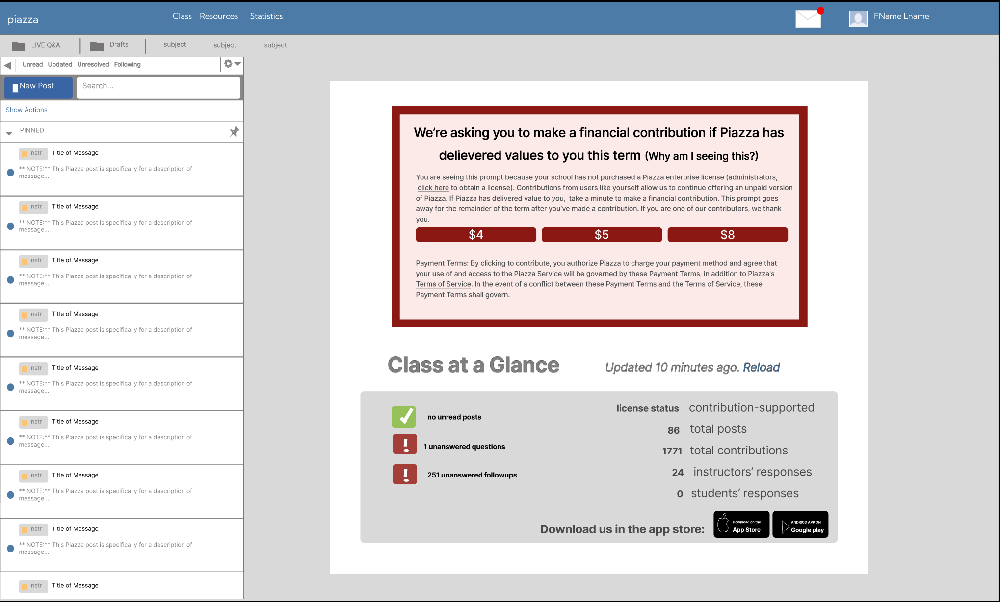
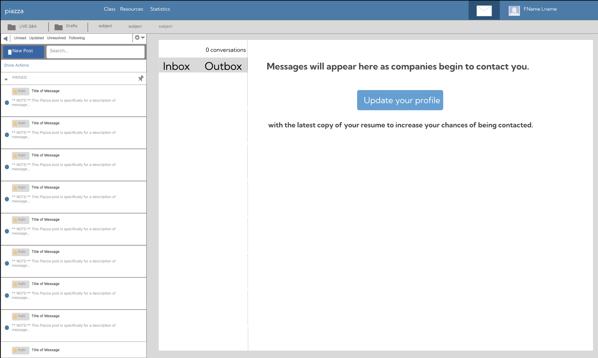

Milestone 4
Group 4:
These are all user stories that are relevant to the proposed solution because these user stories all describe instances where students want to network or view messages from companies but do not know where to go becuase the signifier for this feature is not clear. We would be fixing this in the proposed solution, as it is a part of the toolbar and would improve readability on the toolbar of the website. 3.4 Structured Content Uses visually distinct headings ((https://www.w3.org/TR/wcag-3.0/))
User Story 7:
As a student who uses Piazza, I want to be able to browse/look at companies that are related to my career field.
Alt Design Idea Have a search bar in the header with written text in that display things you could search for like companies
Description & Justification: In our problem of study, usability proved to be a problem in the toolbar. Being that Piazza's secondary purpose is to act as a recruiting tool, it is valuable to users to be able to research companies on the platform. In this design, we have added a search bar to the top near the user icon. In this user story, the user will navigate to the toolbar and type in the company they desire to learn more information about, and click the search icon button. The user then will see a window with information on the company. Evidence: This article shows how most users come to websites knowing what they're looking for. https://www.uxbooth.com/articles/best-practices-for-search/ We also decided on the search box having the ability to submit on enter and clicking the search button. This is backed up by:https://hashnode.com/post/uxui-send-input-with-enter-and-with-or-without-click-cjb58vqfz00hz60wur29o4l7c - where 92% of surveyed users said both should be there. We chose this search box as our best design because the user will have the ability to search anything up from discussion posts, resources, and companies.


User Story 9:
As a student who uses Piazza for my classes, I want to be able to view my inbox and see the messages I have recieved from companies.
Alt Design Idea: an email/letter icon to indicate a mailbox with the number of unread messages.
Description & Justification: In our problem of study, readability was a prevalent problem in the toolbar. The messaging icon was difficult to identify as the logo was not clear or distinguishable. Reasons for this are lack of contrast and unclear logo without description. To address the issue our user story prompts a clear need of “As a student who uses Piazza for my classes, I want to be able to view my inbox and see the messages I have recieved from companies.” This design utilizes an envelope to indicate that is where the button to access the user’s messages or emails would be. The envelope hold a red circle on the corner to indicate the user has unread messages or emails. Here the whole envelope icon will have a hover feature where the user can see the button is clickable. When the user clicks on the button, the background of the icon will turn a little darker to indicate what tab in toolbar the user is in as well as to show the current location. Once on the page, the user will see able to see the mail page. Evidence: The envelope icon is used as a symbol for messages and mail because globally an envelope is the same for the majority of countries, while a mailbox could look different. Source: https://www.nngroup.com/articles/icon-usability/ The hover feature displays the clickability of a button, in this case the envelope. This also should be enough to signify to the user the affordance of the button is clicking. Source: https://baymard.com/blog/links-hover-state The background color change of being slightly darker once clicked, which is a better indicator of what page you're on. This is because users tend ot look at higher contrast areas. Source: https://www.sciencedirect.com/science/article/pii/S0042698904000057 We chose this idea as our high fidelity one because the research we found indicated that this option was the better one in terms of user experience.

